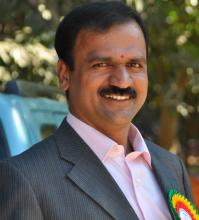

About us
Our instution's motto:
Education beyond Academic Excellence
Vagdevi Vilas Institutions is a premier and a leading group of educational institutions founded by former scientist at ISRO
Sri K.Harish. Our main aim is to create a world class human resource from among the students of our institutions
and evolve them as leaders of tomorrow.
Chairman's message

Dear parents,
Welcome to the Vagdevi Vilas family. At Vagdevi Vilas, we believe that every human being ( vyakti) has a latent strength (shakti)
which is waiting to be realized. A strength which is moving towards perfection.
Every person in the world has a special role, a special talent, a special strength. Everybody does his bit to contribute to the world
to make it a better place than it was yesterday. An Edison could give light to the world, through a Gandhiji, the world understood
the importance of non-violence, a Montessori could re-write the language of child education, a Vivekananda could make the entire
India stand up with self confidence. Similarly, your child could have hidden talents which need to be developed.
Just as a good sculptor sees a beautiful sculpture in every stone, Vagdevi Vilas Institutions realize the existence
of a great strength in every child. It sees tomorrow’s leaders in today’s children.
Tata’s entrepreneurship, Bhagat Singh’s patriotism, Baba Amte’s service to the backward community, environmentalist
Thimmakka’s concern for the ecosystem, Abhinav Bhindra’s Olympic achievement, if an element of all these qualities
could be inculcated in our children, wouldn’t that be great?
Come, bring your child to Vagdevi Vilas Institutions. Welcome to a special environment that encourages and shapes your
child’s hidden talents, splendid dreams and enthusiastic attempts.
We appeal to you to support us in our endeavour to prepare tomorrow’s sculptors.
We are with you.
K. Harish
Chairman,
Vagdevi Vilas Institutions